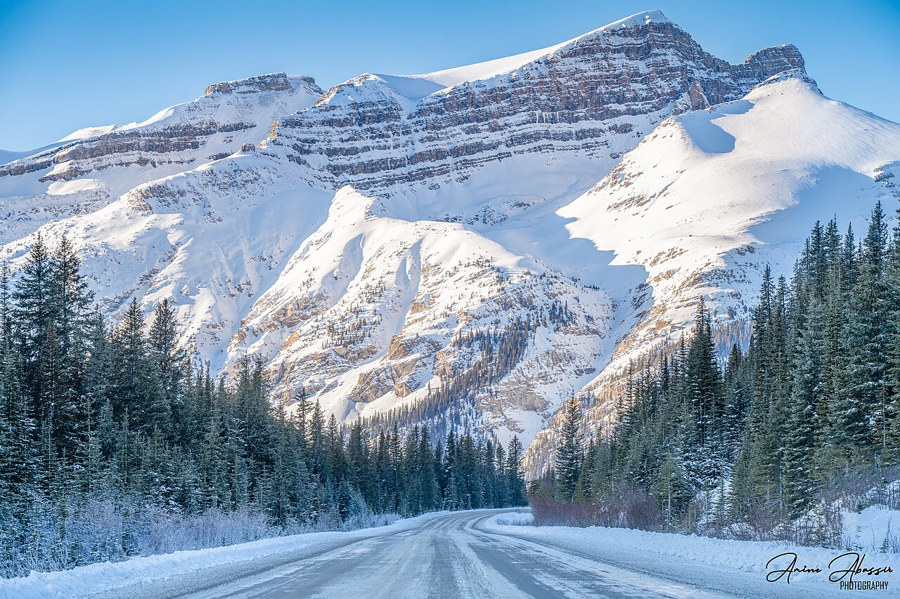

Bienvenidos

¿Cómo es el invierno en Canadá?
El invierno en Canadá es muy frío y dura mucho tiempo, más o menos desde diciembre hasta marzo (a veces hasta abril). En algunos lugares la temperatura baja a menos de 30 grados.
Casi todo el país queda cubierto de nieve, aún así, a la gente le gusta salir porque es el momento de aprovechar para patinar, esquiar y jugar hockey